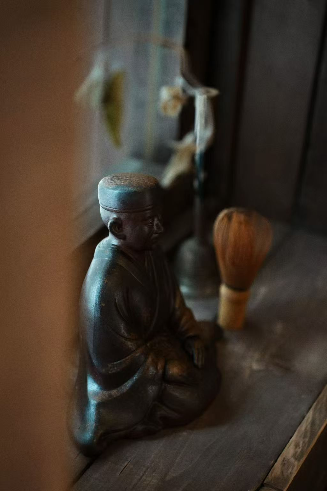

古美术器物
古美术是布里斯湾清明刚上线的新品类，数据还不准确。但它代表了一种和线香/清酒完全不同的消费逻辑——不是"我需要"，是"我遇到了"。
古美术是典型的"偶遇型消费"——你这次来可能碰到喜欢的，也可能碰不到。这种不确定性不是缺陷，是魅力。和线上买古美术最大的区别：你可以上手摸、可以感受质感。
古美术和线香在视觉上天然搭配——一个老香炉配一根线香，场景感极强。袅袅香铺独立店的模型就是"线香+古美术"组合。线香引流，古美术做利润。
三人团队专选。标准不是"值多少钱"，是"美不美"——和布里斯湾整体审美一致。古美术不需要多，需要"每一件都是想带回家的"。
古美术是布里斯湾"慢"的极致体现——它不能被算法推荐，不能被电商替代，只能在线下、在偶然中、在对的时间遇到。
72